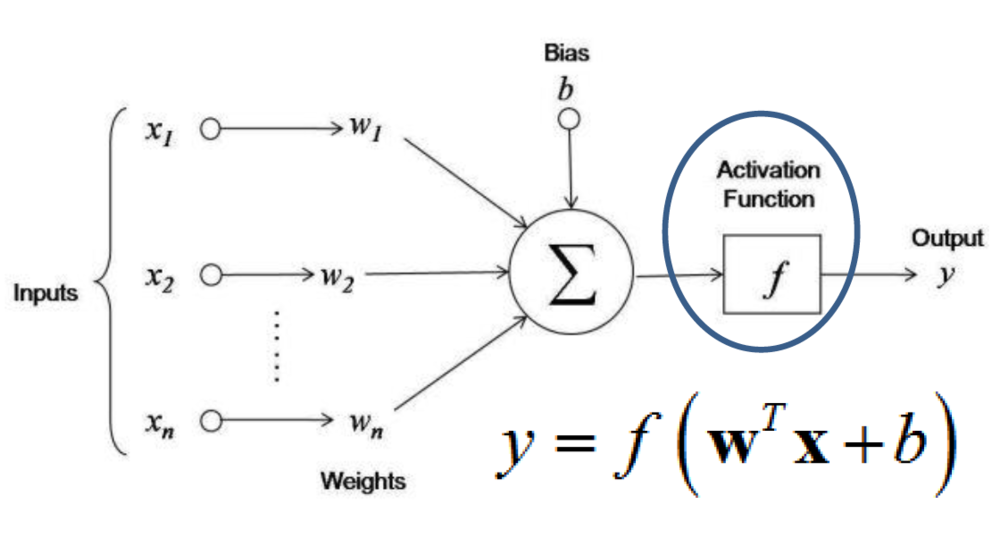
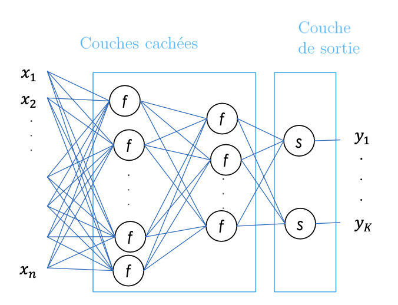
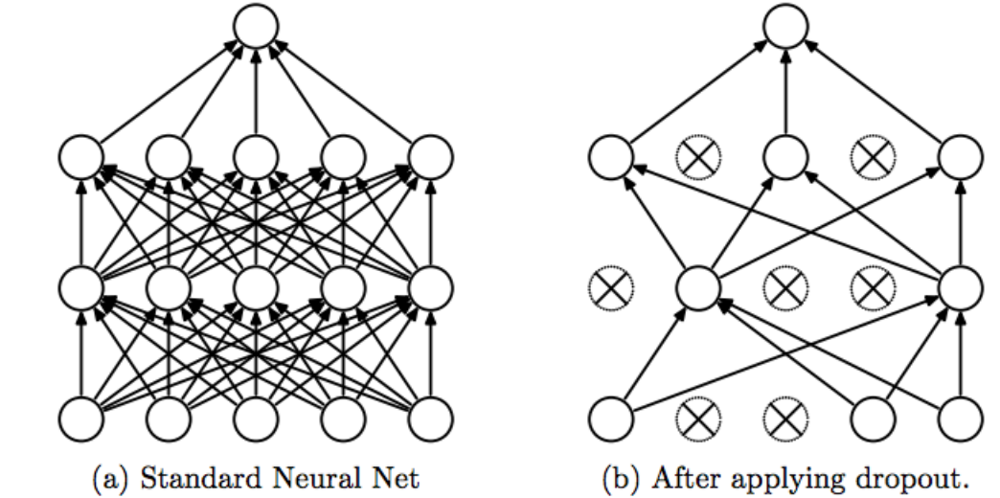

Introduction au Deep Learning
C'est quoi le Deep Learning
Le Deep Learning est une sous-branche du Machine Learning qui utilise des réseaux de neurones profonds pour apprendre des représentations hiérarchiques de données complexes. Contrairement au Machine Learning classique, qui se concentre sur l'extraction de caractéristiques manuellement conçues à partir de données, le Deep Learning permet aux modèles d'apprendre automatiquement à partir de données brutes sans la nécessité d'ingénierie de caractéristiques.
Les avantages du Deep Learning incluent :
- Performance améliorée : Les modèles de Deep Learning peuvent apprendre à partir de données brutes et trouver des caractéristiques importantes pour une tâche donnée, ce qui peut conduire à des performances améliorées sur une grande variété de tâches, y compris la vision par ordinateur, la reconnaissance vocale et le traitement du langage naturel.
- Scalabilité : Les réseaux de neurones profonds peuvent être conçus pour traiter des données massives et peuvent être utilisés dans des environnements distribués pour améliorer encore les performances.
- Adaptabilité : Les modèles de Deep Learning peuvent être adaptés à de nouveaux jeux de données sans avoir besoin de modifications majeures de l'architecture du modèle, ce qui les rend plus flexibles et adaptables que les modèles de Machine Learning classiques.
Cependant, le Deep Learning présente également quelques inconvénients, notamment :
-
Coût en ressources : L'entraînement de modèles de Deep Learning peut être très coûteux en temps et en ressources informatiques, en particulier pour des jeux de données massifs. L'inférence peut également être coûteuse, en particulier sur des dispositifs mobiles ou des systèmes embarqués.
-
Manque de transparence : Les modèles de Deep Learning peuvent être difficiles à interpréter, car ils sont souvent conçus avec des couches cachées qui rendent difficile la compréhension de la manière dont le modèle prend des décisions. Cela peut rendre le débeugage et le dépannage plus difficiles.
-
Besoin de données de haute qualité : Les modèles de Deep Learning nécessitent souvent des ensembles de données massifs et de haute qualité pour obtenir des performances optimales. Cela peut rendre l'entraînement de modèles de Deep Learning difficile pour les domaines où les données sont rares ou coûteuses à collecter.
C'est quoi un Neurone
Un neurone est la plus petite unité de traitement dans un réseau de neurones. Il reçoit des entrées pondérées, les somme et les passe à travers une fonction d'activation non-linéaire pour produire une sortie. Les poids sont des paramètres qui sont ajustés par le modèle pendant l'apprentissage pour minimiser une fonction de coût.

C'est quoi les couches de Neurones
Pour un problème non linéaire ou utilise des couches. Une couche de neurones est un groupe de neurones qui traitent simultanément les entrées qu'ils reçoivent. Les couches de neurones sont généralement organisées en séquences, avec chaque couche prenant en entrée les sorties de la couche précédente. On peut distingue distinguer deux blocs de couches :
- Une ou plusieurs couches cachées composées de plusieurs neurones
- Une couche de sortie composée de K neurones \(y = [y_1, ...,y_k]\)

-
En régression: Sortie continue/un seule neurone => la derniére couche a une fonction d'activation linéaire
-
En classification: La derniere couche a K neurones (K = Nombre de classes) => La dernière couche a une fonction d'activation softmax qui transforme la sortie du réseau en probabilités d'appartenance aux classes.
C'est quoi les fonctions d'activation
Une fonction d’activation est une fonction mathématique utilisé sur un signal. Elle va reproduire le potentiel d’activation que l’on retrouve dans le domaine de la biologie du cerveau humain. Elle va permettre le passage d’information ou non de l’information si le seuil de stimulation est atteint. Concrètement, elle va avoir pour rôle de décider si on active ou non une réponse du neurone. Voici les principales fonctions d’activations que l’on peut trouver dans des réseaux de neurones :
-
Linear: Utilisé en couche de sortie pour une utilisation pour une régression. On peut la caractériser de nulle, puisque les unités de sortie seront identiques à leur niveau d’entré. Intervalle de sortie (-∞;+∞).
-
Sigmoid (logistic) : Fonction la plus populaire depuis des décennies. Mais aujourd’hui, elle devient beaucoup moins efficace par rapport à d’autre pour une utilisation pour les couches cachées. Utilisé en couche de sortie pour de la classification binaire. Intervalle de sortie : {0,1}
-
TanH : Utilisé pour des RNN pour des données en continue. Intervalle de sortie : (-1,1)
-
Softmax : Utilisé pour de la multi classification en couche de sortie. Intervalle de sortie (-∞;+∞).
-
ReLU ( Rectified Linear Unit ) : Ce sont les fonctions les plus populaires de nos jours. Elles permettent un entrainement plus rapide comparé aux fonctions sigmoid et tanh, étant plus légères. Attention au phénomène de ‘Dying ReLU’, auquel on préférera les variations de ReLU. Très utilisé pour les CNN, RBM, et les réseaux de multi perceptron. Intervalle de sortie (0;+∞).
-
Leaky ReLU : La Leakey Relu permet d’ajouter une variante pour les nombres négatifs, ainsi les neurones ne meurent jamais. Ils entrent dans un long coma mais on toujours la chance de se réveiller à un moment donné. Intervalle de sortie (-∞;+∞).

C'est quoi la backpropagation (Comment un réseau s'entraine)
La rétropropagation (backpropagation en anglais) est l'algorithme d'optimisation utilisé pour entraîner les réseaux de neurones. Il s'agit d'une méthode de calcul de gradient qui permet de calculer les gradients de l'erreur par rapport aux poids de chaque neurone dans le réseau, en utilisant la règle de la chaîne.
Le processus de rétropropagation commence par une étape de propagation avant (forward pass) dans laquelle les entrées sont présentées au réseau et les prédictions sont calculées en passant successivement à travers chaque couche du réseau.
Ensuite, l'erreur de prédiction est calculée en comparant les prédictions du réseau aux valeurs réelles de sortie. L'objectif de l'apprentissage est de minimiser cette erreur.
À partir de l'erreur de prédiction, la rétropropagation calcule le gradient de l'erreur par rapport à chaque poids dans le réseau, en utilisant la règle de la chaîne pour calculer les gradients à travers les couches du réseau en partant de la dernière couche vers la première.
Une fois que les gradients ont été calculés, ils peuvent être utilisés pour ajuster les poids dans le réseau en utilisant une méthode d'optimisation telle que la descente de gradient stochastique (SGD en anglais).
L'ensemble du processus de rétropropagation est répété de nombreuses fois, en présentant différentes données d'entraînement au réseau à chaque itération, jusqu'à ce que le réseau converge vers une solution qui minimise l'erreur de prédiction moyenne sur l'ensemble des données d'entraînement.
Terminologie :
- Batch : sous ensemble de la base train
- Epoch : nombre de fois que tous les exemples sont vus en apprentissage
- Itération : nombre de batchs vus en apprentissage
Comprendre l'overfitting et underfitting

On souhaite avoir un réseau qui puisse effectuer des prédictions sur de nouvelles données. Selon la façon dont est entrainé le model, on peut se heurter à 2 problèmes :
-
Sur apprentissage : Cela représente un modèle qui a appris par cœur ses données d’entrainement, qui fonctionne donc bien sur le jeu d’entrainement mais pas de validation. Il effectue alors de mauvaise prédiction sur de nouvelles, car elles ne sont pas exactement les mêmes que celle du jeu d’entrainement. Pour y remédier, il faut améliorer la flexibilité du modèle, et donc jouer sur des concept de régularisation par exemple, ou encore d’early stopping.
-
Sous apprentissage : Ce cas-ci représente un modèle qui n’arrive pas à déduire des informations du jeu de données. Il n’apprend donc pas assez et réalise de mauvaise prédiction sur le jeu d’entrainement. Il faut donc complexifier le réseau, car il ne taille pas bien par rapport aux types de données d’entrées. En effet, il n’arrive pas à capter la relation entre les données d’entrées et leur label.
Dans le cas où la précision du réseau n’est ni bonne sur le jeu d’entrainement, ni sur celui de validation, c’est que le réseau n’a pas eu assez de temps pour apprendre des données. Il faut donc augmenter le nombre d’itération, ou augmenter la taille du jeu de donnée.
Régularisation du réseau avec les Dropout
Le Dropout est une technique de régularisation utilisée pour réduire le surapprentissage dans les réseaux de neurones profonds. On va souhaiter favoriser l’extraction de caractéristique de façon indépendante, afin d’apprendre des caractéristique plus général et plus diverse. Cela va consister à ‘éteindre’, à désactiver certains neurones du modèle, et ce de façon aléatoire d’une même couche, qui ne contribuera donc ni à la phase de feedforward, ni à la phase de backpropagation. D’un point de vue du réseau, cela revient à instancier la valeur en sortie d’une fonction d’activation à 0
